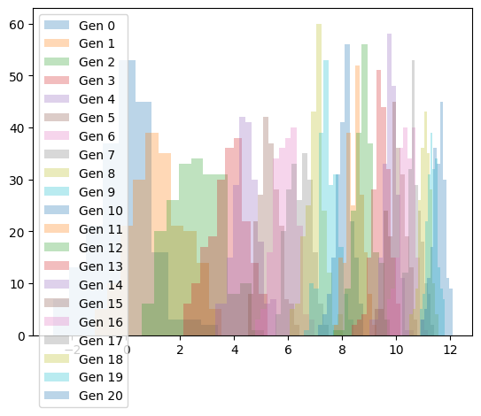
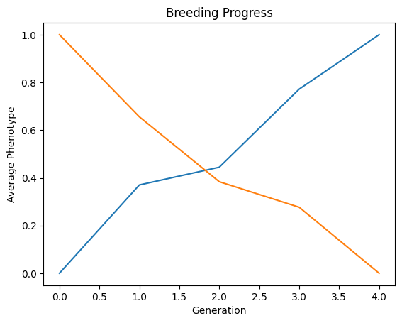

# Parameters
pop_size = 200
h2 = 0.99
reps = 5
num_generations = 20
# Initialize genome and founder population
G = Genome(1, 1000)
P = create_pop(G, create_random_pop(G, pop_size))
T = Trait(G, P, 0, 1)run_generation
run_generation (P, T, h2, reps, pop_size, selection_fraction)
create_progeny
create_progeny (mother_gametes, father_gametes, reps=1)
bv
bv (P, T)
create_pop
create_pop (G, haplotypes)
breed
breed (mother_tensor, father_tensor, recombination_rate=0.1)
recombine
recombine (parent_haplo_tensor, recombination_rate=0.1)
update_pop
update_pop (population, haplotype_pop_tensor)
create_random_pop
create_random_pop (G, pop_size)
phenotype
phenotype (population, trait, h2)
recombine
recombine (parent_haplo_tensor, recombination_rate=0.1)
truncation_selection
truncation_selection (population, trait, top_percent)
calculate_breeding_value
calculate_breeding_value (population_dosages, trait_effects, device='cpu')
Trait
Trait (genome, founder_population, target_mean, target_variance, device='cpu')
Initialize self. See help(type(self)) for accurate signature.
Population
Population (genome, haplotypes, device='cpu')
Initialize self. See help(type(self)) for accurate signature.
Genome
Genome (n_chr, n_loci)
Initialize self. See help(type(self)) for accurate signature.
import torch
import torch.nn as nn
import torch.optim as optim
class GeneticFeatureExtractor(nn.Module):
def __init__(self, input_size, num_features=64):
super(GeneticFeatureExtractor, self).__init__()
self.num_features = num_features
self.conv1 = nn.Conv1d(in_channels=2, out_channels=64, kernel_size=32, stride=8)
self.conv2 = nn.Conv1d(in_channels=64, out_channels=16, kernel_size=8, stride=2)
# Calculate the size after convolutions
conv1_output_size = (input_size - 32) // 8 + 1
conv2_output_size = (conv1_output_size - 8) // 2 + 1
self.flattened_size = conv2_output_size * 16
self.flatten = nn.Flatten()
self.mlp = nn.Linear(self.flattened_size, self.num_features)
def forward(self, x):
x1 = self.conv1(x)
x1 = torch.relu(x1)
x1 = self.conv2(x1)
x1 = torch.relu(x1)
x1 = self.flatten(x1)
x1 = self.mlp(x1)
# Permute the channels
x2 = x.flip(1)
x2 = self.conv1(x2)
x2 = torch.relu(x2)
x2 = self.conv2(x2)
x2 = torch.relu(x2)
x2 = self.flatten(x2)
x2 = self.mlp(x2)
# Average the outputs
x = (x1 + x2) / 2
return x
# Function to create dummy data
def create_dummy_data(batch_size, channels, length):
return torch.randn(batch_size, channels, length)
# Example usage with different input sizes
input_length = 7000 # Change this to any length
pop_size = 1
dummy_data = create_dummy_data(pop_size, 2, input_length)
# Instantiate the model with flexible input size
model = GeneticFeatureExtractor(input_length)
output = model(dummy_data)
print(output.shape) # Expected output shape: (10, 64)
# Define a simple training loop for demonstration
criterion = nn.MSELoss()
optimizer = optim.Adam(model.parameters(), lr=0.001)
# Dummy target data for demonstration purposes
target = torch.randn(pop_size, 64)
# Training loop
num_epochs = 5
for epoch in range(num_epochs):
optimizer.zero_grad()
output = model(dummy_data)
loss = criterion(output, target)
loss.backward()
optimizer.step()
print(f"Epoch {epoch + 1}/{num_epochs}, Loss: {loss.item()}")torch.Size([1, 64])
Epoch 1/5, Loss: 1.1888068914413452
Epoch 2/5, Loss: 0.4471087157726288
Epoch 3/5, Loss: 0.340411901473999
Epoch 4/5, Loss: 0.07119196653366089
Epoch 5/5, Loss: 0.07279734313488007population_statistics
population_statistics (population_tensor)
# Parameters
pop_size = 200
h2 = 0.99
reps = 5
num_generations = 20
# Initialize genome and founder population
G = Genome(1, 1000)
P = create_pop(G, create_random_pop(G, pop_size))
T = Trait(G, P, 0, 1)
# Store populations for plotting
pops = [P]
# Run multiple generations
for generation in range(num_generations):
P = run_generation(P, T, h2, reps, pop_size, selection_fraction=1/reps)
pops.append(P)
# Plot phenotypes for each generation
for i, P in enumerate(pops):
plt.hist(P.phenotypes, alpha=0.3, label=f'Gen {i}')
plt.legend()
plt.show()
BreedingSimulation
BreedingSimulation (G, T, h2, reps, pop_size, selection_fraction)
Initialize self. See help(type(self)) for accurate signature.
# --- Example Usage ---
G = Genome(n_chr=7, n_loci=1000)
founder_pop_size = 2
founder_pop = create_pop(G, create_random_pop(G, founder_pop_size))
T = Trait(G, founder_pop, target_mean=0.0, target_variance=1.0)
sim = BreedingSimulation(G, T, h2=0.2, reps=3, pop_size=200, selection_fraction=0.5)
# Simulate 10 generations (replace this with your RL training loop)
for generation in range(5):
# Placeholder: Generate random actions (you'll use your RL agent's policy here)
actions = 20
state, reward = sim.step(actions)
print(f"Generation {generation+1}: Avg Phenotype = {state:.2f}, Reward = {reward:.2f}")
sim.plot_history()Generation 1: Avg Phenotype = 2.28, Reward = 2.28
Generation 2: Avg Phenotype = 3.86, Reward = 3.86
Generation 3: Avg Phenotype = 4.18, Reward = 4.18
Generation 4: Avg Phenotype = 5.58, Reward = 5.58
Generation 5: Avg Phenotype = 6.56, Reward = 6.56
prep
prep (tensor)
create_dummy_data
create_dummy_data (batch_size, channels, length)
CompleteNetwork
CompleteNetwork (input_size, num_features=64, meta_features=16)
*Base class for all neural network modules.
Your models should also subclass this class.
Modules can also contain other Modules, allowing to nest them in a tree structure. You can assign the submodules as regular attributes::
import torch.nn as nn
import torch.nn.functional as F
class Model(nn.Module):
def __init__(self):
super().__init__()
self.conv1 = nn.Conv2d(1, 20, 5)
self.conv2 = nn.Conv2d(20, 20, 5)
def forward(self, x):
x = F.relu(self.conv1(x))
return F.relu(self.conv2(x))Submodules assigned in this way will be registered, and will have their parameters converted too when you call :meth:to, etc.
.. note:: As per the example above, an __init__() call to the parent class must be made before assignment on the child.
:ivar training: Boolean represents whether this module is in training or evaluation mode. :vartype training: bool*
MetaDataProcessor
MetaDataProcessor (num_features=64, meta_features=16)
*Base class for all neural network modules.
Your models should also subclass this class.
Modules can also contain other Modules, allowing to nest them in a tree structure. You can assign the submodules as regular attributes::
import torch.nn as nn
import torch.nn.functional as F
class Model(nn.Module):
def __init__(self):
super().__init__()
self.conv1 = nn.Conv2d(1, 20, 5)
self.conv2 = nn.Conv2d(20, 20, 5)
def forward(self, x):
x = F.relu(self.conv1(x))
return F.relu(self.conv2(x))Submodules assigned in this way will be registered, and will have their parameters converted too when you call :meth:to, etc.
.. note:: As per the example above, an __init__() call to the parent class must be made before assignment on the child.
:ivar training: Boolean represents whether this module is in training or evaluation mode. :vartype training: bool*
GeneticFeatureExtractor
GeneticFeatureExtractor (input_size, num_features=64)
*Base class for all neural network modules.
Your models should also subclass this class.
Modules can also contain other Modules, allowing to nest them in a tree structure. You can assign the submodules as regular attributes::
import torch.nn as nn
import torch.nn.functional as F
class Model(nn.Module):
def __init__(self):
super().__init__()
self.conv1 = nn.Conv2d(1, 20, 5)
self.conv2 = nn.Conv2d(20, 20, 5)
def forward(self, x):
x = F.relu(self.conv1(x))
return F.relu(self.conv2(x))Submodules assigned in this way will be registered, and will have their parameters converted too when you call :meth:to, etc.
.. note:: As per the example above, an __init__() call to the parent class must be made before assignment on the child.
:ivar training: Boolean represents whether this module is in training or evaluation mode. :vartype training: bool*
# Example usage
input_length = 7000
pop_size = 1
dummy_geno_data = create_dummy_data(pop_size, 2, input_length)
num_meta_features = 5
# Create dummy meta data (tensor of floats)
dummy_meta_data = torch.randn(pop_size, num_meta_features)
# Create the network
network = CompleteNetwork(input_length, num_features=64, meta_features=16)
# Pass data through the network
action_output, value_output = network(dummy_geno_data, dummy_meta_data)
print(action_output.shape)
print(value_output.shape)torch.Size([1, 64])
torch.Size([1, 64])# Example usage with different input sizes
input_length = 7000 # Change this to any length
pop_size = 1
dummy_geno_data = create_dummy_data(pop_size, 2, input_length)
print(dummy_geno_data.shape)
# Instantiate the model with flexible input size
model = GeneticFeatureExtractor(input_length)
output = model(dummy_data)
print(output.shape) # Expected output shape: (10, 64)
# Define a simple training loop for demonstration
criterion = nn.MSELoss()
optimizer = optim.Adam(model.parameters(), lr=0.001)
# Dummy target data for demonstration purposes
target = torch.randn(pop_size, 64)
# Training loop
num_epochs = 5
for epoch in range(num_epochs):
optimizer.zero_grad()
output = model(dummy_data)
loss = criterion(output, target)
loss.backward()
optimizer.step()
print(f"Epoch {epoch + 1}/{num_epochs}, Loss: {loss.item()}")torch.Size([1, 2, 7000])
torch.Size([1, 64])
Epoch 1/5, Loss: 0.7243707180023193
Epoch 2/5, Loss: 0.251212477684021
Epoch 3/5, Loss: 0.3177489638328552
Epoch 4/5, Loss: 0.058963704854249954
Epoch 5/5, Loss: 0.0671977698802948